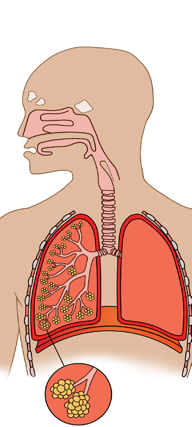

Student’s Book - Form Two
Biology for Secondary Schools
127
Introduction
Respiration is one of the characteristics of living things. It is important for the survival of living things as it leads to the production of energy used for various body activities. Respiration in aerobic organisms is accomplished by gas exchange. Gas exchange involves the exchange of oxygen and carbon dioxide gases across the respiratory surface. In this chapter, you will learn about the mechanisms of gas exchange and respiration in mammals, including aerobic and anaerobic respiration. The competences developed will enable you to maintain a healthy life style that helps to prevent infections and diseases of the respiratory system.
Think
The organism’s body without gas
exchange mechanisms
Concept of gas exchange
Task 6.1
Search the library and internet sources
for the meaning of gas exchange and
features of respiratory surfaces. Then,
write short notes.
Gas exchange is a physical process by which gases move passively by
diffusion across a surface, such as the exchange of oxygen gas and carbon dioxide gas across the respiratory surface. This takes place in different ways in various organisms. For example, unicellular organisms carry out gas exchange by diffusion across the cell membrane. Large organisms cannot carry out diffusion efficiently; instead, they have well developed and specialised organs for gas exchange, called respiratory surfaces. Table 6.1 shows examples of respiratory surfaces in various organisms.

Chapter Six
Gas exchange and respiration
08/04/2026 10:18:34